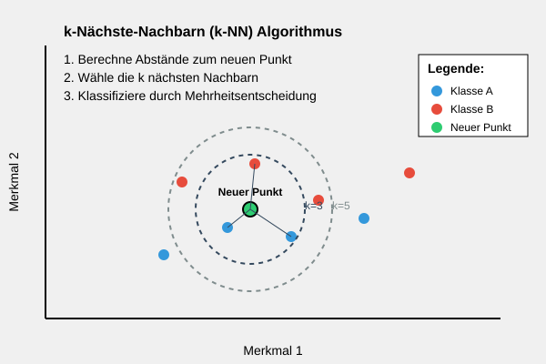

Überblick › LB 10/11 KI und Projektmanagement
11.6 k-Nächste-Nachbarn-Algorithmus (k-NN)
1. Was ist der k-Nächste-Nachbarn-Algorithmus?
Der k-Nächste-Nachbarn-Algorithmus (k-NN) ist ein einfacher, aber leistungsfähiger Algorithmus für Klassifikations- und Regressionsaufgaben im maschinellen Lernen. Er basiert auf dem Prinzip, dass ähnliche Dinge oft nahe beieinander liegen.
2. Wie funktioniert k-NN?
- Wähle einen Wert für k (die Anzahl der zu berücksichtigenden Nachbarn).
- Berechne den Abstand zwischen dem neuen Datenpunkt und allen Trainingsdatenpunkten (wie genau das geht, siehst du in Abschnitt 3).
- Wähle die k nächsten Nachbarn aus.
- Für die Klassifikation: Führe eine Mehrheitsabstimmung durch. (Für die Regression: Bilde den Mittelwert der Zielwerte der k Nachbarn.)

In diesem Beispiel siehst du einen neuen Datenpunkt (grün) und seine 3 nächsten Nachbarn innerhalb des gestrichelten Kreises. Basierend auf der Mehrheit dieser Nachbarn würde der neue Punkt als „blau“ klassifiziert werden. Wenn du k auf 5 änderst, würde der neue Punkt als „rot“ klassifiziert werden.
3. Wie wird der Abstand zwischen zwei Datenpunkten berechnet?
Im vorherigen Abschnitt stand: „Berechne den Abstand zwischen dem neuen Datenpunkt und allen Trainingsdatenpunkten.“ Aber wie macht man das konkret? Damit k-NN überhaupt entscheiden kann, welche Punkte „nah“ beieinander liegen, braucht der Algorithmus eine mathematische Formel für den Abstand zwischen zwei Punkten.
3.1 Der euklidische Abstand
Am häufigsten wird bei k-NN der euklidische Abstand verwendet – dieselbe Formel begegnet dir auch im Kapitel 11.7 k-Means-Clustering. Er entspricht der „Luftlinie“ zwischen zwei Punkten. Hat jeder Datenpunkt zwei Merkmale x und y, lautet die Formel:
d = √((x₂ − x₁)² + (y₂ − y₁)²)
Hat ein Datenpunkt mehr als zwei Merkmale (in der Praxis der Normalfall, z. B. Größe, Gewicht und Alter), wird die Formel einfach erweitert: Für jedes zusätzliche Merkmal kommt ein weiterer quadrierter Differenzterm unter der Wurzel hinzu.
3.2 Beispielrechnung
3.3 Merkmale skalieren
Der Abstand hängt von den Maßeinheiten ab. Haben Merkmale sehr unterschiedliche Wertebereiche, bestimmt das Merkmal mit den größten Zahlen fast allein den Abstand.
3.4 Gleichstände
Bei der Mehrheitsabstimmung kann es unentschieden stehen, z. B. 2 : 2 bei k = 4. Übliche Lösungen sind:
- Bei zwei Klassen ein ungerades k wählen – dann kann kein Gleichstand entstehen.
- Abstandsgewichtung: Nähere Nachbarn zählen stärker, z. B. mit dem Gewicht 1/d.
- Bei Gleichstand k um 1 verringern und neu abstimmen, bis ein eindeutiges Ergebnis entsteht (dann entscheidet im Zweifel der nächste Nachbar).
Auch gleiche Abstände sind möglich (zwei Punkte liegen genau gleich weit entfernt); dann muss eine feste Regel festlegen, welcher Punkt zu den k Nachbarn zählt.
4. Vor- und Nachteile von k-NN
Vorteile
- einfach zu verstehen und zu implementieren
- keine Annahmen über die zugrunde liegende Datenverteilung; kein eigentliches Training nötig
- kann sowohl für Klassifikation als auch für Regression verwendet werden
Nachteile
- rechenintensiv für große Datensätze (für jede Vorhersage Abstand zu allen Trainingspunkten)
- empfindlich gegenüber irrelevanten und unskalierten Merkmalen
- Die Wahl von k kann die Leistung stark beeinflussen.
Hinweis: Die Wahl von k
Die Wahl von k ist entscheidend. Ein zu kleines k kann zu Overfitting führen (einzelne Ausreißer bestimmen das Ergebnis), während ein zu großes k zu Underfitting führen kann (es wird fast immer die häufigste Klasse vorhergesagt). Ein gutes k wird mithilfe von Validierungsdaten gewählt (vgl. 11.3).
5. Anwendungsbeispiele
- Empfehlungssysteme (z. B. „Kunden, die dieses Produkt gekauft haben, kauften auch …“)
- Bildklassifikation (z. B. Erkennung von Objekten in Bildern)
Praxisbezug: Ähnlichkeitssuche
Alltag: Die Funktion „Ähnliche Produkte“ in Online-Shops oder die Suche nach ähnlichen Fotos in deiner Galerie beruhen auf dem Prinzip der nächsten Nachbarn.
Beruf: ML Engineers bauen Suchsysteme, die in Millionen von Datenpunkten in Sekundenbruchteilen die nächsten Nachbarn finden – etwa für Produktempfehlungen oder um zu einer Frage passende Textabschnitte für einen Chatbot herauszusuchen. Weil der naive Vergleich mit allen Punkten zu langsam wäre, nutzen sie spezielle Datenstrukturen und Näherungsverfahren.
Das Wichtigste
k-NN (k nächste Nachbarn): klassifiziert einen neuen Datenpunkt anhand der k nächstgelegenen Punkte der Trainingsdaten: Die häufigste Klasse unter ihnen wird vorhergesagt. Der Wert k ist ein Hyperparameter.
Vorgehen: den Abstand (meist euklidisch) zu allen Trainingspunkten berechnen, nach Abstand sortieren und die k nächsten per Mehrheitsentscheid abstimmen lassen.
Skalierung: Vor abstandsbasierten Verfahren wie k-NN oder k-Means müssen die Merkmale auf vergleichbare Wertebereiche gebracht werden, z. B. durch Min-Max-Skalierung oder Standardisierung. Sonst bestimmt das Merkmal mit den größten Zahlen den Abstand fast allein.
Grundaufgaben
Aufgabe 11.6.1: Abstände von Hand berechnen AFB I–II
Ein kleines Klassifikationssystem soll Früchte anhand von zwei Merkmalen unterscheiden: Süße (x-Achse, Skala 0–10) und Säure (y-Achse, Skala 0–10). Bekannt sind bereits folgende Früchte:
| Frucht | Süße (x) | Säure (y) | Klasse |
|---|---|---|---|
| F1 | 6 | 5 | Apfel |
| F2 | 6 | 6 | Zitrone |
| F3 | 5 | 7 | Apfel |
| F4 | 7 | 7 | Zitrone |
| F5 | 8 | 5 | Zitrone |
| F6 | 7 | 8 | Apfel |
| F7 | 5 | 9 | Zitrone |
Eine neue, noch unbekannte Frucht wurde bei (5, 5) gemessen.
- Berechne den euklidischen Abstand von der neuen Frucht zu allen 7 bekannten Früchten (analog zur Beispielrechnung in Abschnitt 3.2).
- Sortiere die Früchte nach aufsteigendem Abstand.
- Bestimme die Klassifikation der neuen Frucht für k = 3 und für k = 5.
- Vergleiche die beiden Ergebnisse: Fällt dir etwas auf? Erkläre kurz, woran das liegt.
Aufgabe 11.6.2: Skalierung und Gleichstand AFB II
- Bestimme für die Früchte aus Aufgabe 11.6.1 die Klassifikation für k = 4. Welches Problem tritt auf, und wie könntest du es lösen?
- Angenommen, die Säure würde statt auf einer Skala von 0–10 als pH-Wert-Differenz in Tausendstel gemessen (Werte zwischen 0 und 10.000). Was würde sich an der Klassifikation ändern, und was ist zu tun?
Das kann ich jetzt
Grau steht, was der Lehrplan verlangt, darunter, was das für dieses Thema konkret heißt. Hake einen Punkt ab, wenn er in deinem Hefter zusammengefasst ist und du ihn ohne Hilfe kannst. Wie du ihn zusammenfasst, entscheidest du selbst. Die Haken speichert nur dein Browser.
Lehrplan LB 10 Maschinelles Lernen: überwacht, unüberwacht, bestärkend (Kennen von Grundlagen Künstlicher Intelligenz)